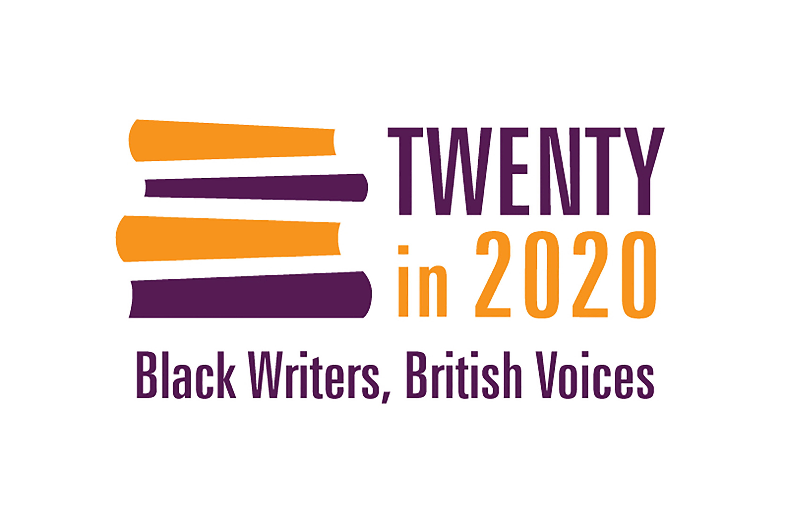

Jacaranda Books’ new initiative Twenty in 2020, will be the first time a UK publisher will publish 20 Black British writers in one year. Working in collaboration with Words of Colour Productions, the aim of the initiative is to normalize the presence of diverse literature, characters and authors across all genres and curricula, with the hope that it will be a source of inspiration for a new generation of publishing professionals and authors.
Jacaranda have a proven track record of developing and publishing diverse writing, with an excellent list of award-winning books and authors the result. The diversity-led publisher now looks to focus the vision on Black British talent.